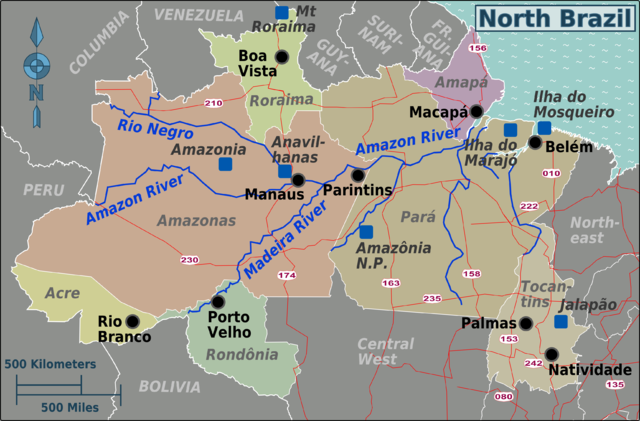

North
The North Region of Brazil is the largest Region of Brazil, corresponding to 45.27% of the national territory. It is the least inhabited of the country, and contributes with a minor percentage in the national GDP and population. It comprises the states of Acre, Amapá, Amazonas, Pará, Rondônia, Roraima and Tocantins. Its demographic density is the lowest in Brazil considering all the regions of the country, with only 3.8 inhabitants per km2. Most of the population is centered in urban areas.
- Area: 3,689,637.9 km² (45.27%);
- Population: 17,707,783 (4,6 people/km²; 6.2%; 2016);
- GDP: R$ 308 billion / US$94,8 billion (2016; 4.7%);
- Climate: Equatorial;
- States: Acre, Amapá, Amazonas, Pará, Rondônia, Roraima, Tocantins;
- Largest Cities: Manaus (2,094,391); Belém (1,446,042); Porto Velho (511,219); Ananindeua (510,834); Macapá (465,495); Rio Branco (377,057); Boa Vista (326,419); Santarém (294,447); Palmas (279 856);
- Economy: Iron, Energy production, electronic manufacturing, tourism;
- Transport: Mainly rivers (which are abundant in the region). Highways are scarce and present mainly in the east. Airplanes are commonly used in small remote communities and sometimes in the larger cities;
- Vegetation: Almost the entire region is covered by Amazon Rainforest, except the state of Tocantins, which has savanna-like vegetation (cerrado). Although most of the native vegetation still remains, the region suffers from critical problems due to the growing deforestation of the area;
- Notable characteristics: Presence of the Amazon Rainforest, which is the vegetation dominant in every state but Tocantins. Cities are spread far apart in the region, and it has the lowest population density of the country. There are very few paved highways in the region, as it is almost isolated from the rest of the country. It is also the biggest region of Brazil, being responsible for almost half of the Brazilian territorial extension. Economic growth is above national average (especially in Amazonas and in Tocantins).